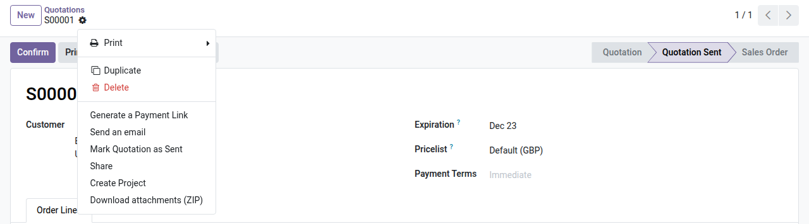
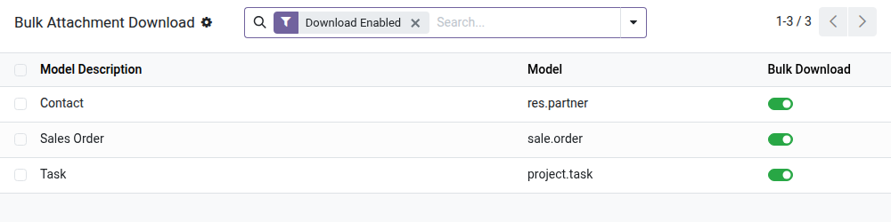

All the files of a record — or of several — in a single ZIP.
Odoo 20 can zip the files of one message in the chatter. Nobody files their documents that way: an order carries the signed delivery slip in one message, the drawing in another, the statement in the attachment box. Sending them to the engineering office then takes as many downloads as there are files, and as many attachments in the email.
"Download attachments (ZIP)" sits in the Actions menu of the quotation, and of a selection in the list.

A toggle per model: here quotations and sales orders, contacts and tasks.

../../etc/passwd would otherwise write outside its folder for whoever extracts the archive.Getting files out is one thing, organizing them is another. The OdooSkills range offers document management with folders, tags and access rights, an orphan attachment cleaner, and document upload by the customer from their portal. Full catalog: apps.odooskills.com.
LGPL-3 license — compatible with Odoo 20.0 Community and Enterprise. Support: apps@odooskills.com.